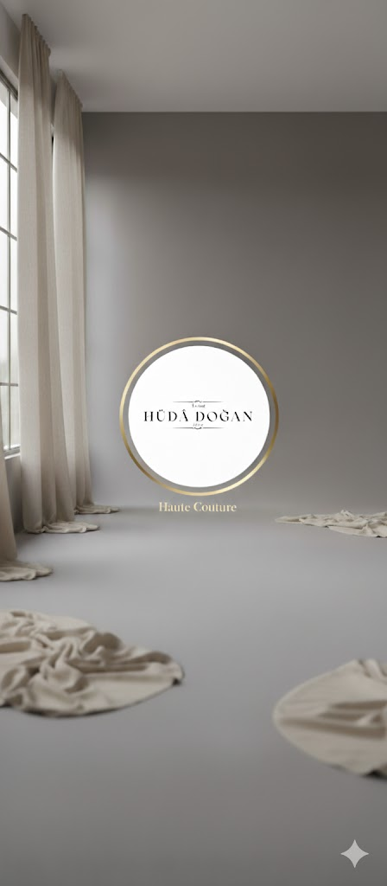
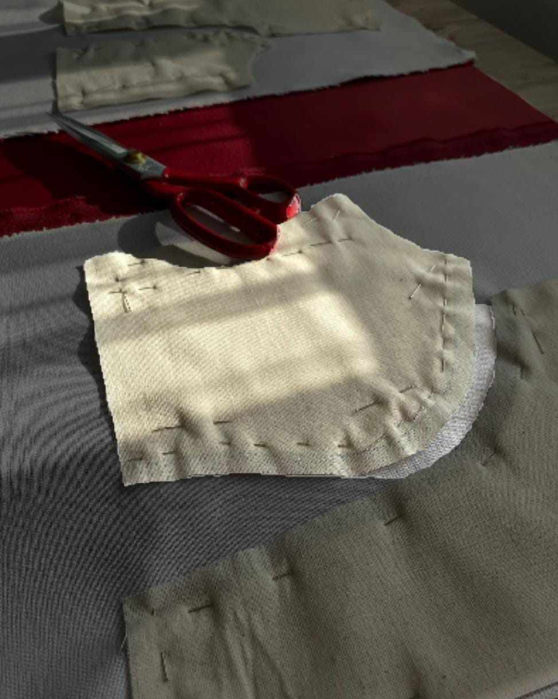
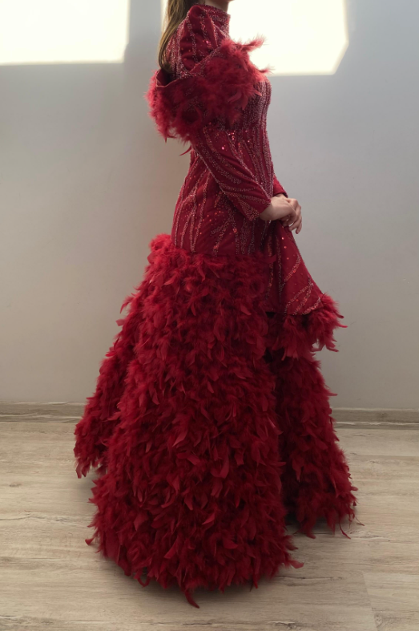
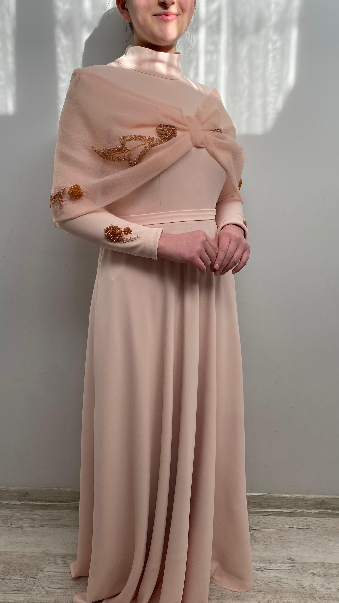
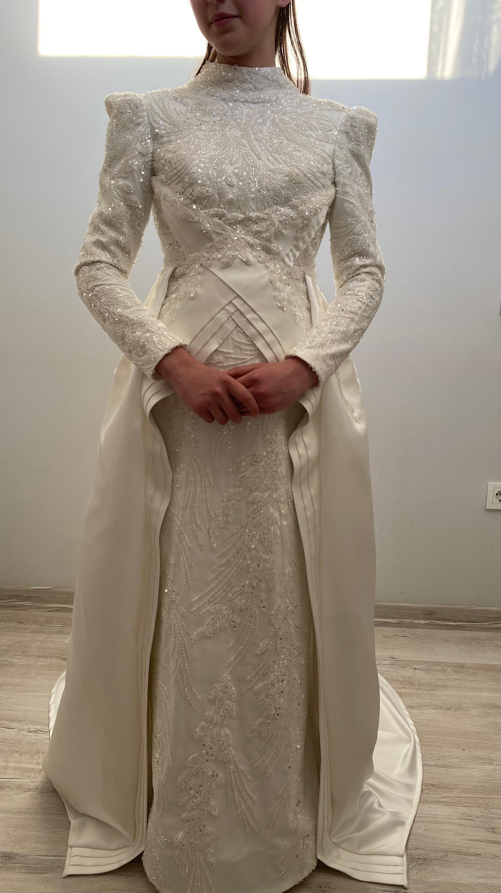
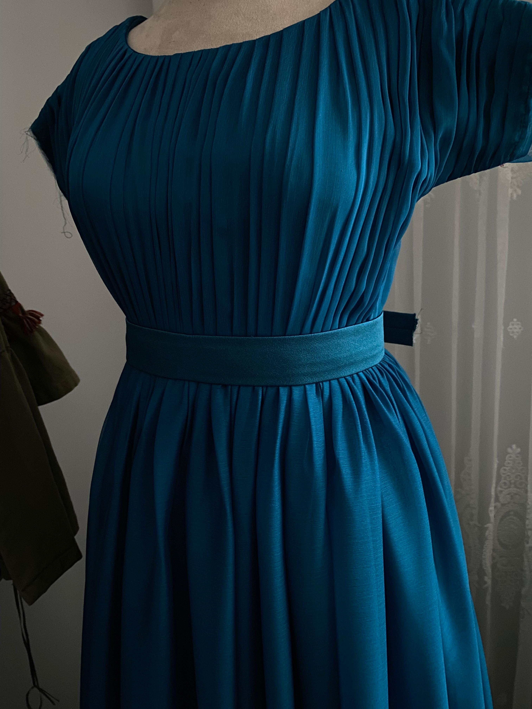

ÖZEL DİKİMİN ZARAFETİ
Yirmi yıllık tecrübe, modern çizgiler ve geleneksel el işçiliği. Hüda Doğan Atölyesi'nde her tasarım, sizin vücut ölçülerinize göre şekillenir.
Seri üretimin ötesinde, tamamen size özel bir deneyim.

YENİ KOLEKSİYON
Sezonun öne çıkan parçaları

ÖZEL TASARIM
Haute Couture
MODERN KESİM
Günlük Şıklık
ZARİF DETAYLAR
İşlemeli
GÜNLÜK KOLEKSİYONU
Özel DikimSTİL REHBERİ

Kumaş Seçiminin Önemi
Doğru kumaş, tasarımın ruhunu yansıtır. İpek, saten ve dantel kullanımında dikkat edilmesi gerekenler.
İNCELE
Vücut Tipine Göre Giyim
Hangi kesim sizin için daha uygun? A kesim, balık model veya düz kesim elbiseler.
İNCELE
2025 Moda Trendleri
Bu sezonun öne çıkan renkleri ve kesimleri. Atölyemizde uyguladığımız modern dokunuşlar.
İNCELE
Kumaş Seçimi: Tasarımın Gizli Kahramanı
Özel dikim (Haute Couture) dünyasında, tasarım süreci çizimle başlar ama ruhunu kumaşla bulur. Mükemmel bir kalıp, yanlış bir kumaş seçimiyle tüm büyüsünü kaybedebilirken; doğru kumaş, en sade tasarımı bile bir sanat eserine dönüştürebilir.
1. Doğallığın Lüksü: İpek ve Şifon
Atölyemizde önceliğimiz her zaman doğal liflerdir. İpek Şifon uçuş uçuş bir hava yaratırken, İpek Saten vücudu sarar.
2. Yapısal Duruş: Krep ve Tafta
Net hatlara sahip bir elbise istiyorsanız, krep kumaşlar vazgeçilmezdir. Vücut kusurlarını örten yapısı ve dökümlü duruşuyla mükemmel sonuçlar verir.

Kendinizi Tanıyın: Vücut Tipine Göre Giyim Sanatı
Her beden eşsizdir ve her bedenin kendine has bir güzelliği vardır. Moda, bu güzelliği ortaya çıkarma sanatıdır.
1. Armut Vücut Tipi
Kalçaların omuzlardan daha geniş olduğu tiptir. Kayık yaka bluzlar ve A kesim etekler önerilir.
2. Kum Saati Vücut Tipi
Omuz ve kalçanın orantılı, belin ince olduğu tiptir. Bel vurgulu elbiseler sizin için idealdir.

Geleceğe Bakış: 2025 Haute Couture Trendleri
Moda dünyası hızla değişiyor. 2025 yılına girerken, doğallıkla teknolojinin harmanlandığı bir dönemi işaret ediyor.
1. Metalik Işıltılar
Gece elbiselerinde gümüş ve altın yansımalar geri dönüyor. İnce işçilikli boncuk işlemeler bu trendin başrolünde.
2. Transparan Katmanlar
Tül ve organze kumaşların üst üste kullanılmasıyla yaratılan derinlik hissi ön planda.